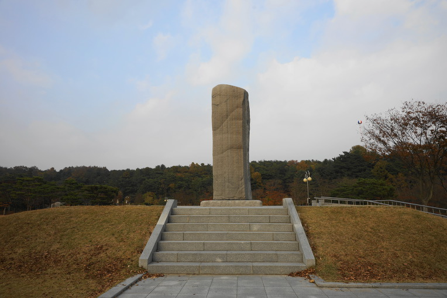
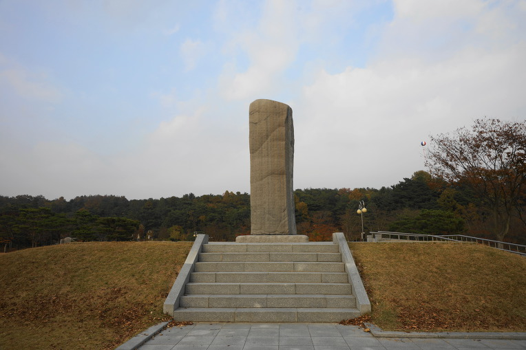
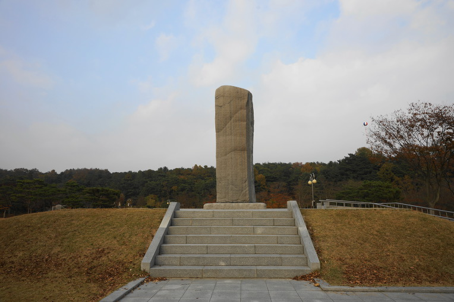

| 국가 | 정치 체제 | 제천행사 |
|---|---|---|
| 부여 | 사출도(마가, 우가, 구가, 저가) | 영고 |
| 고구려 | 제가회의 | 동맹 |
| 옥저 | 왕이 없음, 군장(읍군, 삼로)이 다스림 | x |
| 동예 | 왕이 없음, 군장(읍군, 삼로)이 다스림 | 무천 |
| 삼한(마한, 변한, 진한) | 왕이 없음, 군장(신지, 읍차)이 다스림, 천군(제사장)이 소도에서 제사담당(제정분리 사회) | 계절제 |
| 국가 | 결혼 | 풍습 |
|---|---|---|
| 부여 | x | x |
| 고구려 | 서옥제(장가) | x |
| 옥저 | 민며느리제 | x |
| 동예 | 족외혼 | 책화 |
| 삼한 | x | ?? |
